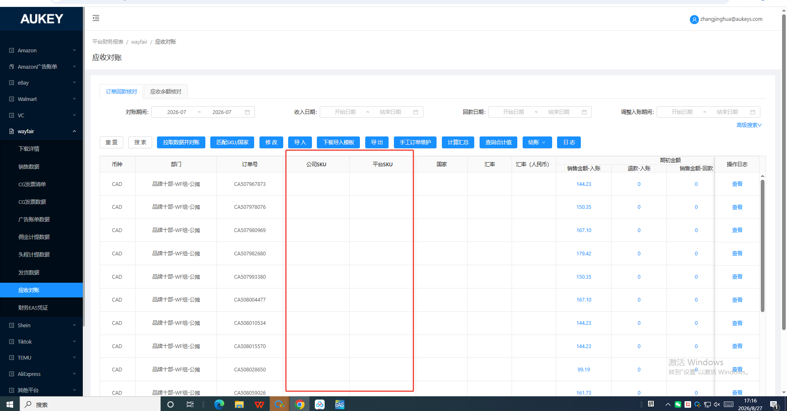
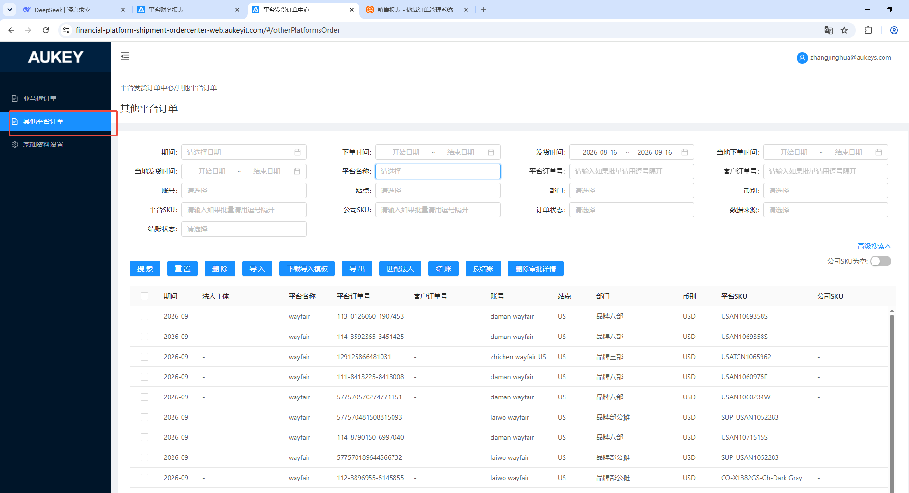
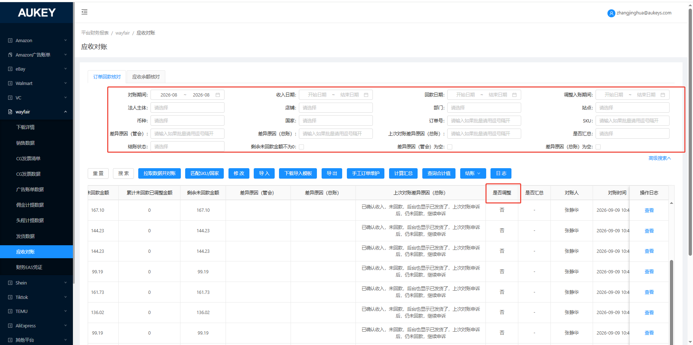

1.当①拉取到销售数据-月度结算明细且未拉取到发货数据；或②拉取到发货数据且发货数 据【公司SKU、平台SKU】均没值；按照【回款日期所在月+店铺+订单号+币种】维度分 别匹【供应链/新自发货】/【销售工具/其他平台订单】创建时间/当地下单时间为含回款日 期所在月内的前6个月12个月的SKU/公司SKU、平台SKU；
2.再将所选范围内剩余未匹到平台SKU和公司SKU的数据，再按照【回款日期所在月+店 铺(店铺)+订单号】维度在【供应链/新自发货/订单管理/订单管理】和【销售工具/平台发货订单中心/其他平台订单】订单创建时间为含回款日期所在月内的前6个月12个月的数据 中匹【账号+订单号】并获取对应平台SKU和公司SKU（若匹到同个公司SKU/平台SKU存 在逗号分隔的多个字段值，则取第一个逗号前的字段值）；
3.增加搜索框“是否调整”-选项（是/否），单选


